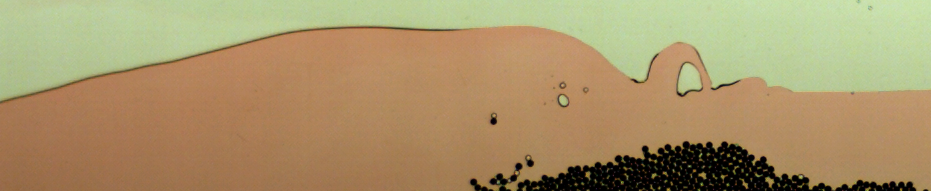
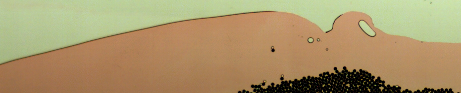
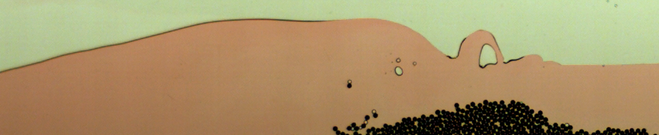
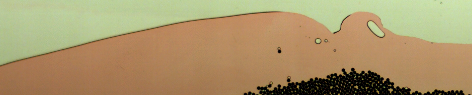

Teaching
- Images Geophysical Fluid Dynamics MATH3458/5458 semester II
- (with thanks to Dr. Stephen Griffiths):
* Internal gravity waves (IGW) Morning Glory (section 2.6 notes): link
one and
two
- IGW in the atmosphere (NASA):
visible due to cloud formation &
visible wake behind Amsterdam Island & South Sandwich Islands
- inertia-gravity waves in the stratosphere; from Dornback, Birner et al. J. Geophys. Res. 107, 2002
- IGW packet (section 2.6 notes): group speed propagates at right angles to phase speed (due to: Stephen Griffiths)
- Experiments and simulation St. Andrews's Cxross.
* Rotation: -inertial oscillations
- Rotating tank experiments MIT.
* Geostrophic wind approx. seen in: wind maps with pressure contours (weather for surfers)
- ECMWF analyses (showing winds and geopotential height at 850hPa); from Dornback, Birner et al. J. Geophys. Res. 107, 2002
- Weather: Meteorological Office: surface pressure
- European Centre for Medium Range Weather Forecasting (ECMWF): research
* Shallow/hydraulic flows: Environmental Agency's predictions Trent Aegir tidal bore
- Tidal bore Qiantang River
- Granular bores link
- Stommel's model solutions" a), b), c)
* Thomas Birner's homepage on tropopause dynamics
* Images in Geophysical Fluid Dynamics Laboratory Woods Hole
- MSc Kieran Newman on ``Modelling the transition of tides to bores'', Semester II 2015.
- Open MSc project Weather dynamics for rapidly rotating convection (related poster) with Prof. Steve Tobias, 2016.
- 4th year Modelling & MSc projects, Semester II 2014
- Two sets of tutorials MATH1012, Semester II 2013-2014, Semester II 2015-2016.
- Tutoring, Semester II 2-13-2014, 2014-2015, 2015-2016.
- MATH3000 project papers, two in 2013-2014 Semesters I & II, three 2014-2015.
 





{kind=link}
{kind=link}
{kind=link}
{kind=link}
{kind=link}
{kind=link}
{kind=link}